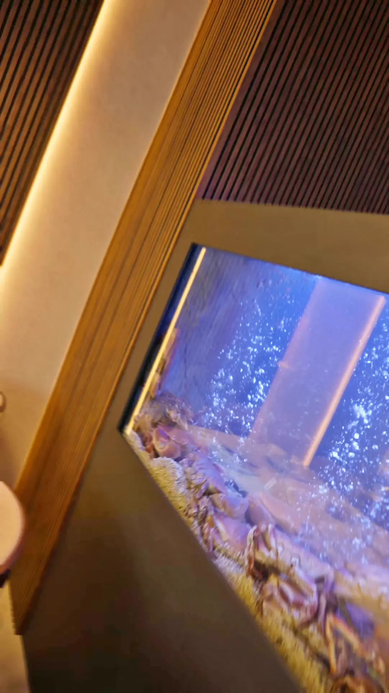

4,2 · 1747 críticas Google
O mar chega vivo à sua mesa.
Marisco do viveiro, cozinha portuguesa de tacho e uma adega à altura. Em Odivelas, desde 2001.
Do viveiro para a mesa
O que nos pedem sempre
Toque num prato para ver os detalhes.
A carta
Marisco ao peso, cozinha de sempre
Preços indicativos nesta proposta — a confirmar com a casa. Informe-nos de alergias ou intolerâncias.
Desde 2001
Mais de 20 anos a servir Odivelas
Abrimos em 2001 na Ribeirada com uma ideia simples: marisco fresco, vivo no nosso viveiro, e a cozinha portuguesa que se come em casa. Hoje continuamos iguais no que importa.
- 2001a abrir portas
- 4,2★no Google
- 1747críticas de clientes
A casa
Sala, viveiro e adega
Veja-nos em movimento
O que dizem
Média de 1747 críticas no Google Maps.
Reservas
Guarde a sua mesa
Escolha o dia e a hora. Ao fim de semana a sala enche — reserve com antecedência.
Ligar 21 934 5551Perguntas frequentes
Visite-nos
Na Ribeirada, em Odivelas
O mapa é do Google e só carrega se aceitar.